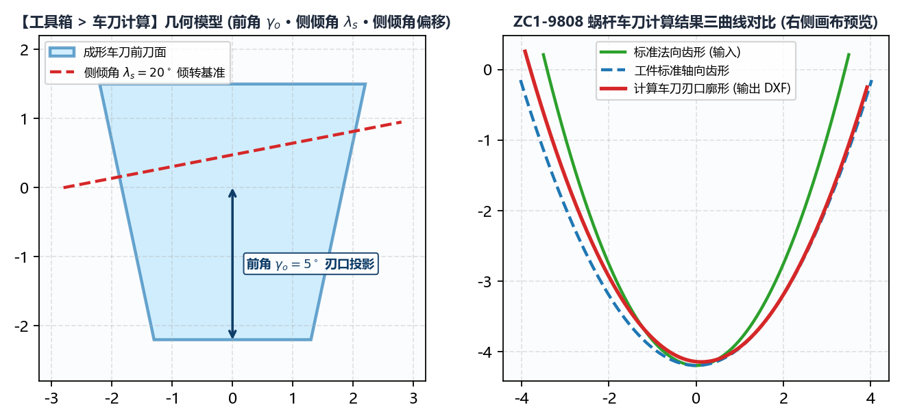

7.2 车刀计算：大导程螺纹/蜗杆粗加工成形车刀刃口设计
在大导程螺母、滚珠丝杠及中大模数精密蜗杆（如 ZC1-9808）的制造工艺路线中，热处理前或硬态开粗阶段通常采用数控车床成形车刀（Form Turning Tool）先行车削出螺旋槽，再留 磨削余量上磨床精磨。
当车刀具有非零的前角（Rake Angle）或为了避让大螺旋角而垫斜了一个侧倾角（Side Tilt Angle）时，车刀前刀面与工件三维螺旋面的空间交线将发生显著非线性畸变——若直接按工件法向或轴向齿形去线切割车刀片，车出的螺旋槽必然产生严重的齿形半角失真。工具箱 -> 车刀计算 模块专用于精确解算车刀前刀面上的真实成形刃口曲线。
一、车刀空间前刀面截交模型与参数说明

切换至 工具箱 -> 车刀计算，面板包含以下 10 项参数：
| 参数名称 | 默认值 / 单位 | 工程定义与输入要求 |
|---|---|---|
工件类型 |
内螺纹 / 外螺纹 |
选择内孔车刀或外圆车刀空间啮合构型。 |
螺纹旋向 |
右旋 / 左旋 |
工件螺旋槽旋向。 |
工件中径 () |
工件中径基准（对应输入齿形 所在直径）。 | |
导程 () |
工件导程。填入 工件中径 与 导程 后，下方 螺旋升角 自动实时算出。 |
|
螺旋升角 () |
∘^\circ∘（自动计算） |
实时显示中径处的理论螺旋升角。 |
前角 () |
0（单位：∘^\circ∘） |
车刀前刀面相对于径向基准面的纵向前角（平前刀面成形车刀填 0，带正前角槽型填具体度数如 5 ~ 8）。 |
侧倾角 () |
0（单位：∘^\circ∘） |
车刀刀杆（或刀垫）绕径向轴线倾斜安装的侧倾角度。 • 若刀杆水平正装（前刀面包含工件轴线），填 0；• 若刀杆按中径螺旋升角倾斜装夹（法向装刀），填入实际倾斜角度（通常等于或接近 螺旋升角）。 |
侧倾角偏移 |
0（单位：） |
车刀旋转侧倾中心相对于齿槽对称中心的偏置距离（常规对中安装保持 0）。 |
标准法向齿形文件 |
选择 .dxf 文件 |
注意：此处导入的基准齿形必须为工件的 法向 齿形 DXF！（若您手头是由 绘图工具 -> 蜗杆 生成的 端面(左) 齿形，请先用 工具箱 -> 曲线转换 将其转换为 法向 齿形后再导入此处）。 |
车刀齿形保存路径 |
选择输出 .dxf 路径 |
指定计算出的车刀前刀面刃口 .dxf 保存路径。 |
二、执行计算、导出线切割 DXF 与审阅 _3D.html 交互报告
- 填妥参数并选择
标准法向齿形文件与车刀齿形保存路径后，点击左下角主按钮生成车刀数据； - 右侧画布对比审阅： 右侧画布立即绘出对比图：蓝色曲线为输入的标准法向齿形，红色曲线为求解出的车刀前刀面真实刃口齿形；
- 双文件输出：
<文件名>.dxf（车刀刃口加工图）：可直接发送给慢走丝线切割机床（WEDM）或光学曲线磨床（PG），在硬质合金/CBN刀坯前刀面上直接切割出成形刀刃；<文件名>_3D.html（三维空间啮合交互式报告）：在同目录下自动生成独立网页文件。双击用 Chrome / Edge 浏览器打开，即可 360° 旋转、放大检视三维工件螺旋槽曲面与倾斜车刀前刀面平面在空间中的真实截交线，直观验证刀刃各点是否存在后角干涉。